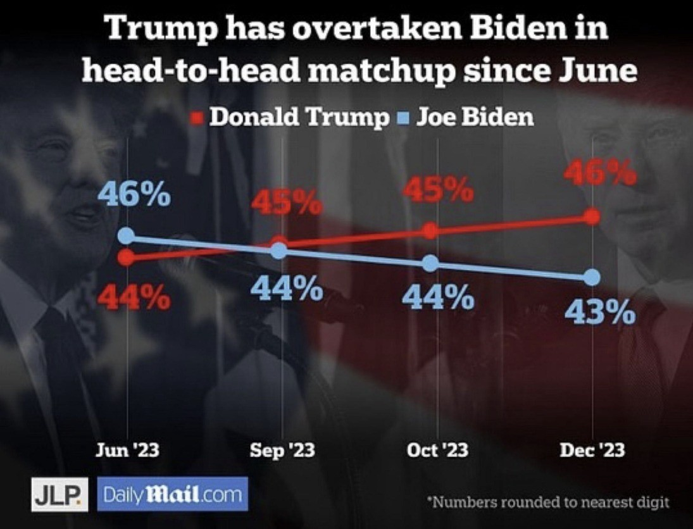

Data Visualisation Portfolio
[PLACEHOLDER: This is a portfolio of ten coding challenges I have created for PP434: Automated Data Visualisation for Policymaking. TBD: add one sentence on difficulty TBD: add one sentence on click on the different challenges]
CC1. Hosting
CC2. Building
Task: Set up an account on the Economics Observatory Data Hub. Build two separate charts using the “create” tool.
CC3. Debate
Task: Produce two charts that support or refute (or are related to in some way) to a topic of policy debate.
Across Europe, nations race towards a green transition, yet a fundamental question divides them: what counts as "green" energy? Germany and France offer contrasting answers
Germany has abandoned nuclear power whilst renewables have skyrocketed. France maintains declining but still substantial nuclear energy, which it counts as "green" in line with EU Taxonomy.
CC4. Replication
Task: Find a chart that a policy organisation, a journalist, think tank, television channel or company has used. Replicate and then improve on it.
Original Chart
Source: Crilly, Rob. "A choice between REVENGE or NOTHING". Daily Mail, December 26, 2023. 2
My Replication
I was unable to source the background image used in the original. As an alternative, I reconstructed a similar visual effect using comparable imagery combined with a transparent black filter.3
My Improvement
I removed the distracting background image, corrected misleading vertical positioning of identical data points, and removed inconsistent x-axis intervals to eliminate temporal distortion.
CC5. Accessing Data
API Task
Task: Add a chart to your site that uses a live link to an API. Below your chart, add a functional description of the API (Application Programming Interface).
I retrieved the chart data from the Open-Meteo API, a free and well-documented weather forecasting service. The API endpoint is constructed using several key parameters:
Base URL: https://api.open-meteo.com/v1/forecast
latitude=47.42 & longitude=10.98 specify the geographical coordinates for the location of interest, in my case mount Zugspitze in southern Germany.4
hourly=snowfall,snow_depth requests hourly measurements for both forecasted snowfall rates and accumulated snow depth.
timezone=Europe/Berlin ensures alignment with the Central European Time zone.
forecast_days=16 retrieves forecast data for the next 16 days (maximum forecast period).
Scraper Task
Task: Using a Google Colab python notebook, scrape a website. Then clean and normalise the data and export into TIDY format.
I extracted the medal data from Olympedia, which the Olympic World Library recognises as the most comprehensive database on the Olympic Games. The site's straightforward tabular structure made it particularly suitable for web scraping. I applied the scraping methodology covered in the PP434 seminar.5
CC6. Loops
Task: Use a loop to batch download six different series as JSON files. Save these to your GitHub account and use these to supply the data to six (or more) charts on a theme of your choice. In addition, use use a loop in your Javascript in order to embed the six charts.6
CC7. Maps
Task: Produce two maps covering Scotland and Wales. One map should be a coordinates map, the other should be a cloropleth.7
CC8. Big Data
Task: Produce two charts using either of the two UK prices datasets provided in class.
Price Analysis Chart 1
Description of first price analysis.
Price Analysis Chart 2
Description of second price analysis.
CC9. Interactive Charts
Task: Produce two charts that include interactivity beyond simple tooltips (e.g., sliders, dropdowns, clickable legends).
CC10. Advanced Analysis & Machine Learning
Advanced Analytics
Task: Produce a chart that uses more advanced analytics such as bubble, histogram of distributions, de-trended, shock analysis, Diff-in-Diff, or heat maps.
Description of advanced analytical technique used.
Machine Learning
Task: Conduct an applied data analysis using either a supervised or an unsupervised learning method.
supervised method .
Footnotes
[1] In both CC1 charts, I modified the JSON specifications to adjust background color and dimensions. The complete source of Chart 1 is: Economics Observatory. "The debt mountain: The G7's big problem". Substack, Jul 18, 2025. The complete source of Chart 2 is: Jo Wood (GitHub: jwoLondon), "London Tube Map", Vega-Lite Examples. ↩
[2] I originally discovered this chart in the r/ChartCrimes subreddit channel. ↩
[3] Please note that downloaded versions of the replicated chart will not include the background image, as I was unable to integrate both elements within the JSON specification. Instead, I have defined the background as a container element in the CSS governing the page design, with the chart overlaid accordingly.↩
[4] I obtained the latitude and longitude coordinates by right-clicking on the location of interest on Google Maps.↩
[5] The Python script I used to scrape the website can be found in my GitHub repository.↩
[6] The Python script I used can be found in my GitHub repository. When replicating my chart, please note that the Historical Weather Data API from Open Meteo has minutely and hourly call limits that are reached after running the code once. Like in CC5 Chart 1, I retrieved the geographic coordinates of the locations of interest through a simple Google Maps search.↩
[7] The data for the cloropleth map can be retrieved from the ONS Website. The coordinate data used for the coordinates map originates from a project conducted by students at the University of Waterloo, who developed a route connecting all pubs in the United Kingdom as part of a Travelling Salesman Problem study. The data is available via their website. The code I used to filter out only Welsh coordinates can be found in my GitHub repository.↩